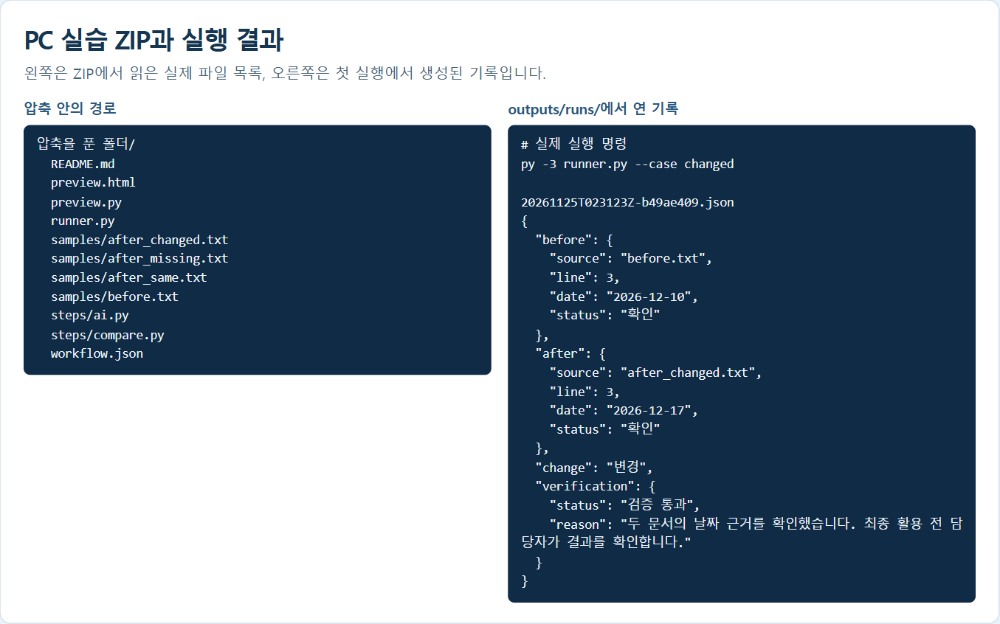
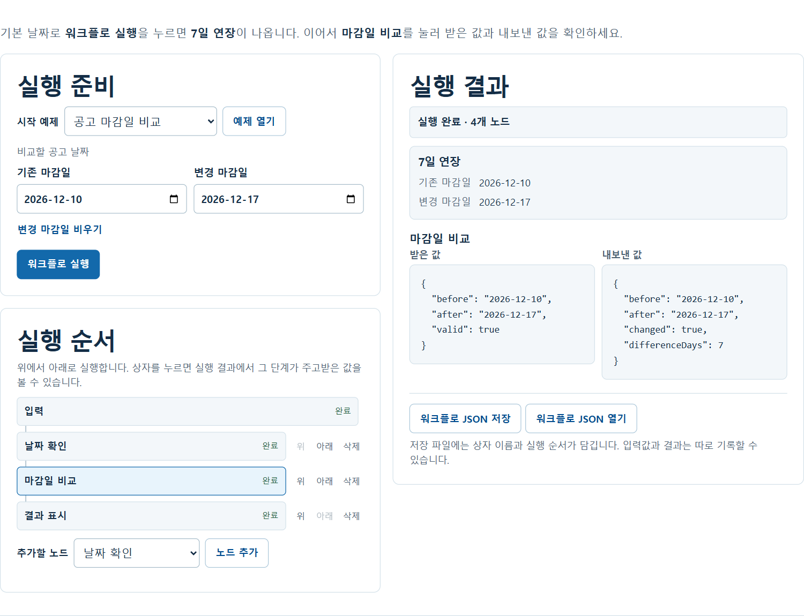
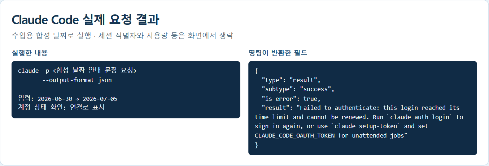
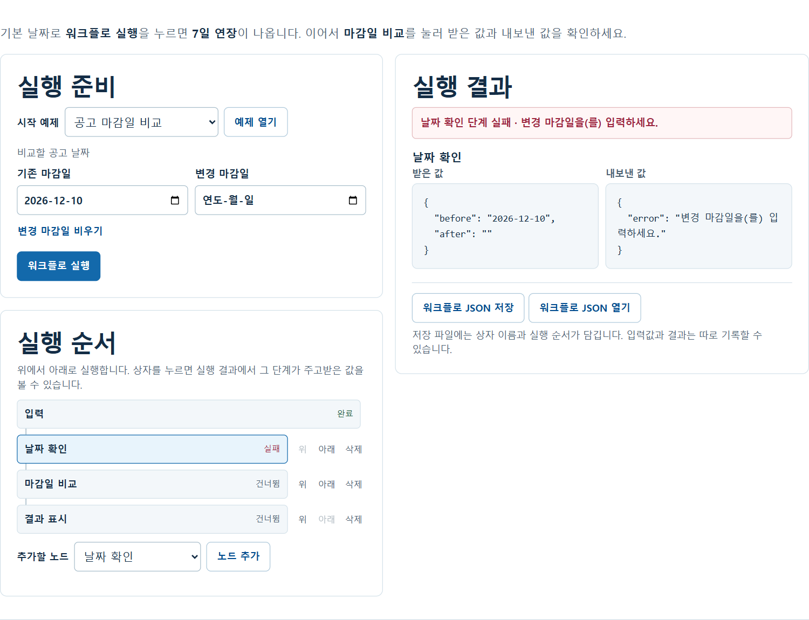

4회차 · · 13:30–17:30
내 업무를 처리하는
프로그램 만들기
반복하는 일 하나를 골라 내 손으로 실행 순서를 정합니다. Claude Code로 만들고, 결과가 틀리면 어느 단계에서 값이 달라졌는지 찾아 고칩니다.
개인 실습 시작수업 일정14:10 첫 요청 · 15:10 첫 실행
- 13:30–13:55
- 수학 난제, AGI, 반례 실습
- 13:55–14:10
- Team 계정 연결 확인, 세 줄로 설계하고 첫 요청
- 14:10–14:40
- 내 도구 첫 버전 만들기
- 14:40–14:50
- 휴식
- 14:50–15:10
- 내 입력으로 첫 실행
- 15:10–15:35
- 파일 트리, 워크플로우, AI 호출 따라가기
- 15:35–16:25
- 기능 개선 또는 API·MCP·CPU 모델 중 선택
- 16:25–16:35
- 휴식
- 16:35–17:05
- 새 입력과 오류 입력으로 검증
- 17:05–17:30
- 저장하고 다시 열어 실행
13:30–13:55
AI가 낸 답을 어떻게 확인할까?
수학에서는 주장과 증명을 각각 확인합니다. 오늘 만들 도구에서도 AI가 돌려준 값과 그 값이 근거에 맞는지를 따로 살핍니다.
리만 가설의 증명은 어떻게 검증했을까?
소수의 개수는 범위가 커질수록 어느 정도 예측할 수 있습니다. 리만 가설은 그 예측에서 생기는 오차를 얼마나 정밀하게 설명할 수 있는지에 연결됩니다. 수학적으로는 리만 제타 함수의 특정한 영점들이 모두 한 직선 위에 놓인다는 주장입니다.
- 증명 공개
- 레벤트 알푀게는 간단한 상황에서 시도한 두 아이디어를 더 일반적인 문제에 적용하는 과정에서 Claude가 핵심 단계의 구성을 제안했다고 설명합니다. 공동 작업의 결과는 컴퓨터로 검사할 수 있는 Lean 코드 약 1,700만 줄로 공개됐습니다.
- 독립 검증
- Lean·Mathlib 검증팀은 코드가 여러 환경에서 같은 증명 데이터를 만들어 내는지 확인했습니다. 증명이 겨냥한 명제가 수학 라이브러리의 리만 가설과 정확히 같은지 두 도구로 대조하고, 그 증명 데이터를 여러 검사기로 다시 확인했습니다.
- 공식 표기
- 검증팀은 고전적 리만 가설의 명제와 증명이 정확하다고 발표했습니다. 11월 25일 확인한 Clay 수학연구소의 문제 페이지에는
Active가 표시됐습니다. 두 기록은 형식 검증 결과와 기관의 게시 상태를 각각 알려줍니다.
반례 하나로 추측이 바뀐 사례
에르되시는 평면에 점을 놓을 때 거리가 정확히 1인 점의 쌍을 얼마나 많이 만들 수 있는지 물었습니다. 정사각형으로 시작하면 점 4개에서 그런 쌍이 4개 나옵니다.
2026년 5월, OpenAI 모델은 점의 수를 늘릴 때 단위거리 쌍이 기존 추측보다 더 빠르게 늘어나는 배치 방법을 내놓았습니다. 이 방법은 점을 더 많이 놓은 배치를 계속 만들 수 있어서 증가율에 대한 추측을 깨는 근거가 됩니다. 연구자들은 이 구성을 다시 검토하고 사람이 읽을 수 있는 증명으로 정리했습니다.
길이가 1입니다.
5분 실습 · 소수라는 주장 확인하기
n에 0, 1, 2를 넣으면 41, 43, 47이 나옵니다. Claude에게 이 식이 항상 소수인지 물어보고, 답으로 받은 값을 직접 넣어봅니다.
반례 확인
n = 40이면 1,681 = 41 × 41입니다. 몇 번 맞았는지와 모든 입력에서 맞는지는 검증 범위가 다릅니다.
수학 능력으로 AGI를 판단할 수 있을까?
메러디스 링겔 모리스와 동료들은 AI를 평가할 때 능력의 폭과 과제별 성능을 따로 보자고 제안합니다. 수학을 잘 푼다는 기록은 그 과제의 성능을 보여줍니다. 법률 검토부터 일정 조정까지 잘하는지도 알아보려면 분야를 넓혀 각각 시험해야 합니다.
- 특화 AI
- 문서 분류처럼 맡긴 과제 안에서 얼마나 잘하는지 평가합니다.
- 범용 AI(AGI)
- 여러 분야에 능력을 적용할 수 있는지, 각 분야에서 성능이 어느 수준인지 함께 봅니다.
- 초지능(ASI)
- 넓은 범위에서 인간 전문가의 능력을 크게 넘어서는 수준을 가리킵니다.
기술적 특이점은 성능 등급과는 별개의 가설입니다. 버너 빈지는 인간을 넘어선 지능이 기술을 만드는 일 자체에 투입되면, 발전 속도와 방식이 달라져 이후를 지금의 경험으로 예측하기 어려워질 수 있다고 봤습니다.
13:55–15:10
내 업무 도구의 첫 버전을 만듭니다
강사 예제는 공고 마감일 비교입니다. 문의 분류, 파일 비교, 회의 메모 정리처럼 입력 하나와 예상 결과 하나를 바로 준비할 수 있는 자기 업무를 고릅니다.
작업 폴더를 열고 연결을 확인합니다
시작 파일을 받아 압축을 풉니다.
runner.py가 보이는 폴더를 탐색기에서 열고, 주소 표시줄에powershell을 입력합니다.Test-Path .\runner.py py -3 --version claude auth status위치 검사 결과는
True, Python은 3.10 이상이어야 합니다. Claude 연결이 필요하면claude auth login으로 공식 로그인 화면을 열어 본인 Team 계정을 선택합니다.5분 동안 입력·처리·결과를 적습니다
평소 받는 자료와 마지막에 꼭 확인하는 값 하나를 고릅니다. 아래 세 줄을 자기 업무로 바꾸고, 공개 또는 가상 자료로 입력 예시를 하나 준비합니다.
- 입력
- 이전 공고와 새 공고, 텍스트 파일 두 개
- 처리
- 두 파일에서 마감일을 찾아 비교
- 결과
- 바뀐 날짜와 원문 위치를 표시한 검토표
터미널에서
claude를 연 뒤 첫 요청을 보냅니다.첫 요청 예문
이 폴더에서 아래 업무를 처리하는 도구를 만들어줘. 입력은 [입력], 처리는 [처리], 결과는 [결과]야. 정상 입력 예시와 예상 결과를 같이 만들고, 사용할 파일과 실행 명령을 알려줘. 내 입력으로 결과가 저장되는 데까지 만들어줘.결과가 저장되는 데까지 실행합니다
준비된 예제를 먼저 실행하면 작업 폴더가 제대로 열렸는지 확인할 수 있습니다.
outputs/latest.md를 열어 두 날짜와 원문 위치가 있는지 확인합니다.py -3 runner.py --case changed이제 Claude Code가 알려준 명령으로 내 도구를 실행합니다. 값이 예상과 다르면 실제 입력 한 줄, 나온 결과, 예상했던 결과를 함께 주고 문제가 생긴 단계 하나를 수정합니다.
설치가 제한된 PC에서는 브라우저 실습에서 흐름을 조립하고, 날짜나 문서를 바꿔 실행한 뒤 JSON으로 저장합니다. 브라우저 실습 열기
15:10–15:35
실행 버튼 뒤에서 일어나는 일
파일 트리를 보면 어느 파일을 열어야 할지 알 수 있고, 워크플로우를 보면 어느 단계까지 값이 제대로 전달됐는지 알 수 있습니다.
파일 트리에서 고칠 곳을 찾습니다
- workflow.json
- 단계의 이름과 순서를 바꿀 때 엽니다.
- runner.py
- 단계를 읽고 실행하는 규칙을 볼 때 엽니다.
- steps/
- 날짜를 읽거나 비교하는 방식을 고칩니다.
- samples/
- 처리할 입력 예시를 넣습니다.
- outputs/runs/
- 어느 단계에서 값이 달라졌는지 찾습니다.
실제 파일 목록과 기록 화면

워크플로우에서 입력과 출력을 따라갑니다
실행기는 workflow.json을 읽고 앞 단계의 출력을 다음 상자에 넘깁니다. 예를 들어 날짜가 빠지면 브라우저 실습은 날짜 확인에서 비교를 건너뜁니다. PC에서는 날짜를 찾지 못한 위치와 보류 판정을 파일에 저장합니다.
- 파일 읽기원문과 줄 번호
- 마감일 비교이전 날짜와 새 날짜
- AI 초안 선택새 날짜를 담은 문장
- 검사 후 저장검토표 또는 보류 사유

differenceDays: 7을 내보낸 기록을 확인합니다.AI가 프로그램을 만들 때, 프로그램이 AI를 부를 때
만드는 중에는 Claude Code가 모델이 요청한 파일 읽기, 수정, 명령 실행을 권한에 따라 수행합니다. 실행 결과가 모델에 돌아가면 그 결과를 보고 또 수정할 수 있습니다.
완성한 도구를 쓰는 중에는 내 실행기가 순서를 정합니다. 파일 읽기와 날짜 비교는 PC의 코드가 합니다. AI 단계가 켜져 있으면 그때 필요한 값과 지시만 모델에 넘깁니다.
- 내 PC요청 만들기새 마감일 2026-12-17
한국어 초안 한 문장 - Claude Code 경유Claude 서버날짜와 문장을 지정된 형식으로 반환
- 내 PC응답 대조하기새 마감일과 다르면 확인 보류
모델은 받은 지시문과 자료를 작은 단위인 토큰으로 처리하고, 그 맥락을 참고해 다음 토큰을 이어 응답을 만듭니다. 코드가 필요한 항목을 읽도록 deadline과 draft 두 필드로 받습니다. 형식을 잘 지킨 문장이라도 날짜가 틀릴 수 있으므로, 원본에서 추출한 날짜와 다시 비교합니다.
실제 호출 오류와 모의 응답 검증 화면
테스트 PC에서 CLI 상태는 연결로 표시됐지만 실제 호출은 로그인 만료를 반환했습니다. 모의 실행에는 의도적으로 이전 날짜를 넣어서, 인증 문제와 무관하게 검사 단계가 어떻게 작동하는지 확인했습니다.

is_error: true와 인증 만료 메시지
15:35–16:25
필요한 연결 하나만 추가합니다
내 도구에 필요한 기능을 더 고쳐도 좋습니다. 외부 자료, 다른 앱에서 쓸 기능, 내 PC에서 도는 모델이 필요하다면 아래 실습을 고릅니다.
- API · 외부에서 자료 받기
- 현장 방문 준비 도구가 좌표로 날씨를 요청하고, 응답에서 강수확률 하나를 가져옵니다. HTTP로 요청을 보내고 JSON에서 필요한 값을 골라 내 도구에 넘깁니다. API 호출 실습
- MCP · 내 기능을 다른 도구에 연결
- 업무 종류를 받으면 검토 규칙을 반환하는 함수를 등록합니다. Claude Code가 이름과 입력 형식을 확인해 호출합니다. 규칙 한 줄을 바꾸고 같은 호출에서 바뀐 값이 돌아오는지 확인합니다. MCP 서버 실습
- CPU 모델 · 내 PC에서 응답 만들기
- Hugging Face에서 실행할 모델 파일을 받고 CPU 실행기로 엽니다. 공고 예제와 같은 날짜로 요청해 원문의 뜻과 형식을 지켰는지 확인합니다. 모델 선택과 다운로드
16:35–17:30
새 입력으로 시험하고 다시 엽니다
처음 성공한 입력을 보관합니다. 조건이 다른 입력과 값이 빠진 입력을 넣기 전에, 각각 어떤 결과가 나와야 하는지 적습니다.
| 무엇을 넣을까? | 어떤 결과가 나와야 할까? |
|---|---|
| 마감일이 다른 공고 | 변경 전후 날짜와 원문 위치가 저장됩니다. |
| 날짜가 그대로인 새 공고 | 마감일 그대로가 표시됩니다. |
| 날짜가 빠진 공고 | 어느 입력을 확인해야 할지 알려줍니다. |
| 틀린 날짜를 반환한 모의 AI | AI의 초안을 확인 보류로 남깁니다. |
입력을 비우면 어디서 멈추는지 보기

원인이 있는 단계 하나를 고친 뒤, 실패한 입력과 처음 성공한 입력을 둘 다 다시 실행합니다. 두 결과가 맞으면 도구를 닫았다가 같은 폴더에서 다시 엽니다.
실행 명령, 시험한 입력과 결과, 다음에 바꿀 한 가지를 자기 폴더에 저장합니다.
원문과 출처
- 리만 가설 · 알푀게의 공개문, Lean·Mathlib 공동 검증 발표, Clay의 문제 설명과 게시 상태
- 단위거리 · OpenAI 발표, Alon 외의 반례 검토
- AI 능력의 수준 · Morris 외의 AGI 평가 틀, 버너 빈지의 특이점 논문
- 모델 요청 · Claude의 도구 호출, 컨텍스트, CLI 구조화 응답
칠판 사진은 수업용 연출 이미지입니다. 실행 캡처에는 교육용 가상 입력을 사용했습니다.